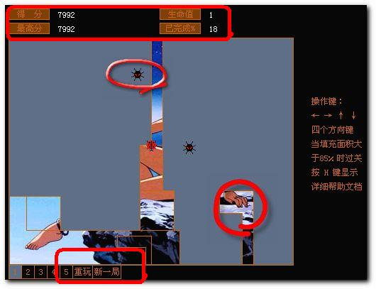

● 游戏策略 |
您可以按上下左右键，控制小瓢虫的运动。小瓢虫在它运动所过之处，都会留下痕迹，即画一条线。如果您让七星瓢虫的运动轨迹构成一个封闭的 图形，那么就会显示其后隐藏的背景画面。当您填充的背景图片超过了85％后，那么您就顺利过关了。
当然，那些害虫当然不会让您轻易过关的。如果瓢虫运动规矩在构成封闭图形前，让害虫入侵了，就是害虫碰到了您所画的线， 那么您的生命值就会减一，另外，当您开始画新的轨迹时，您千万不能回头，否则也算犯规，生命值也会减一。当生命值为0后，也就Game
Over了。 在游戏画面的上方，显示了游戏中的一些状态，其中有：您的得分，最高得分，剩余生命值和当前填充的面积。 |
| |
|
|